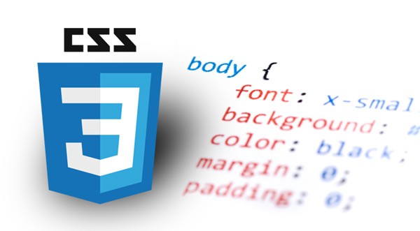

W3C, HTML, and CSS
What is W3C?
W3C stands for the World Wide Web Consortium and it is an international community where Member organizations, a full-time staff, and the public work together to develop Web standards. Led by Tim Berners-Lee, the goal of the W3C is to ensure longevity for the Web by formulating protocols and standards that stand the test of time. W3C's philosophy is based on Open Standards Principles and Design Principles as well its Vision for the Web. The Open Standards Principles are in support of the Modern Paradigm of Standards which specifies cooperation, transparency, collective empowerment, and voluntary adoption for all members. The Design Principles stipulate information availability for all people regardless of any characteristic and sharing of information across all viable devices. The W3C Vision includes nurturing the full 2-way (read/write) interaction on the Web, recognition of the duality of the Web as a repository of linked data and also a set of services, and constant improvement of Web security through technological design to foster trust and confidence.

What is HTML
HTML stands for Hypertext Markup Language and Tim Berners-Lee wrote the browser and server software for the Internet-based hypertext system in late 1990. It contains the instructions that the web browser uses to render a web page including the actual text as well as links to other web pages. However, images or videos (aka media files) have their own URLs that must be requested separately. Also, HTML is usually combined with CSS files and scripting languages such as JavaScript for rendering enhanced presentation details for the web sites. HTML elements such as headings, lists, links, quotes, etc. are used to build the web pages and are denoted by tags.
What is CSS?
CSS stands for Cascading Style Sheets and it provides the detailed instructions for the presentation of a document written in HTML. The CSS specifications are maintained by the World Wide Web Consortium (W3C) and it operates a free CSS validation service for CSS documents. CSS is designed to enable the separation of presentation and content, including layout, colors, and fonts. There are many benefits to using CSS including more flexibility and control for the presentation characteristics, reduced complexity and repetition in the HTML code by sharing the same CSS file across multiple HTML files, and improved page load speed due to caching of the CSS file. CSS also allows for the same HTML content to be displayed in different formats such as on-screen, in print, by voice, as well as mobile device.